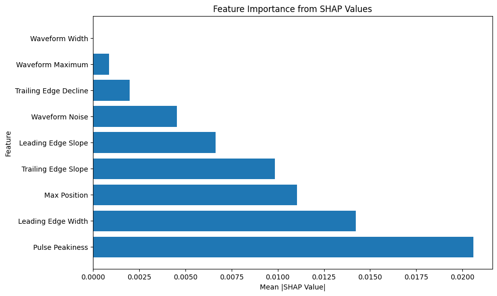
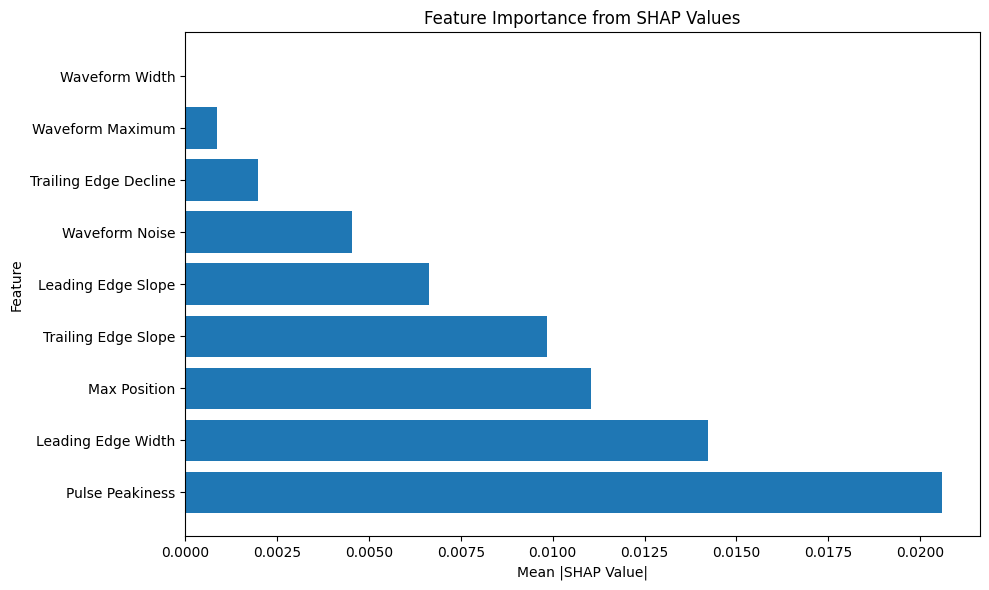

XAI for Sea Ice Roughness from Waveform#
This notebook is similar to the previous ones, but it is experimenting XAI on the task of regression on sea ice roughness using waveform features.
We need to install GPY and restart session as we did in our last notebook.
!pip install Gpy
Collecting Gpy
Downloading GPy-1.13.2-cp311-cp311-manylinux_2_17_x86_64.manylinux2014_x86_64.whl.metadata (2.3 kB)
Collecting numpy<2.0.0,>=1.7 (from Gpy)
Downloading numpy-1.26.4-cp311-cp311-manylinux_2_17_x86_64.manylinux2014_x86_64.whl.metadata (61 kB)
━━━━━━━━━━━━━━━━━━━━━━━━━━━━━━━━━━━━━━━━ 61.0/61.0 kB 3.5 MB/s eta 0:00:00
?25hRequirement already satisfied: six in /usr/local/lib/python3.11/dist-packages (from Gpy) (1.17.0)
Collecting paramz>=0.9.6 (from Gpy)
Downloading paramz-0.9.6-py3-none-any.whl.metadata (1.4 kB)
Requirement already satisfied: cython>=0.29 in /usr/local/lib/python3.11/dist-packages (from Gpy) (3.0.12)
Collecting scipy<=1.12.0,>=1.3.0 (from Gpy)
Downloading scipy-1.12.0-cp311-cp311-manylinux_2_17_x86_64.manylinux2014_x86_64.whl.metadata (60 kB)
━━━━━━━━━━━━━━━━━━━━━━━━━━━━━━━━━━━━━━━━ 60.4/60.4 kB 3.9 MB/s eta 0:00:00
?25hRequirement already satisfied: decorator>=4.0.10 in /usr/local/lib/python3.11/dist-packages (from paramz>=0.9.6->Gpy) (4.4.2)
Downloading GPy-1.13.2-cp311-cp311-manylinux_2_17_x86_64.manylinux2014_x86_64.whl (3.8 MB)
━━━━━━━━━━━━━━━━━━━━━━━━━━━━━━━━━━━━━━━━ 3.8/3.8 MB 63.6 MB/s eta 0:00:00
?25hDownloading numpy-1.26.4-cp311-cp311-manylinux_2_17_x86_64.manylinux2014_x86_64.whl (18.3 MB)
━━━━━━━━━━━━━━━━━━━━━━━━━━━━━━━━━━━━━━━━ 18.3/18.3 MB 97.4 MB/s eta 0:00:00
?25hDownloading paramz-0.9.6-py3-none-any.whl (103 kB)
━━━━━━━━━━━━━━━━━━━━━━━━━━━━━━━━━━━━━━━━ 103.2/103.2 kB 10.1 MB/s eta 0:00:00
?25hDownloading scipy-1.12.0-cp311-cp311-manylinux_2_17_x86_64.manylinux2014_x86_64.whl (38.4 MB)
━━━━━━━━━━━━━━━━━━━━━━━━━━━━━━━━━━━━━━━━ 38.4/38.4 MB 20.5 MB/s eta 0:00:00
?25hInstalling collected packages: numpy, scipy, paramz, Gpy
Attempting uninstall: numpy
Found existing installation: numpy 2.0.2
Uninstalling numpy-2.0.2:
Successfully uninstalled numpy-2.0.2
Attempting uninstall: scipy
Found existing installation: scipy 1.14.1
Uninstalling scipy-1.14.1:
Successfully uninstalled scipy-1.14.1
Successfully installed Gpy-1.13.2 numpy-1.26.4 paramz-0.9.6 scipy-1.12.0
XAI Neural Network Approach#
import numpy as np
import pandas as pd
import matplotlib.pyplot as plt
from sklearn.model_selection import train_test_split
from sklearn.preprocessing import StandardScaler
from sklearn.metrics import classification_report, confusion_matrix, accuracy_score, roc_curve, auc
import tensorflow as tf
from tensorflow.keras.models import Sequential
from tensorflow.keras.layers import Dense, Dropout, BatchNormalization
from tensorflow.keras.callbacks import EarlyStopping, ReduceLROnPlateau
import seaborn as sns
import ast
from scipy.optimize import curve_fit
from scipy.stats import median_abs_deviation
import shap
# Function to parse string representation of waveform array into numeric values
def parse_waveform(waveform_str):
"""Parse the string representation of waveform array into numeric values"""
cleaned_str = waveform_str.replace('e+', 'e').replace(' ', '')
try:
# Use ast.literal_eval for safe evaluation of the string as a list
waveform_list = ast.literal_eval(cleaned_str)
return np.array(waveform_list)
except (SyntaxError, ValueError) as e:
try:
# Manual parsing fallback
values_str = waveform_str.strip('[]').split(',')
values = []
for val in values_str:
val = val.strip()
if val: # Skip empty strings
values.append(float(val))
return np.array(values)
except Exception as e2:
print(f"Error parsing waveform: {e2}")
return np.array([])
# ----- Waveform Feature Extraction Functions -----
def extract_waveform_features(waveform):
"""Extract features from a radar waveform as described in the literature"""
features = {}
# Normalize waveform for relative measurements
if np.max(waveform) > 0:
norm_waveform = waveform / np.max(waveform)
else:
norm_waveform = waveform.copy()
# 1. Leading Edge Width (LEW)
# Find the positions where the waveform crosses 30% and 70% thresholds on rising edge
try:
# Find the maximum position
max_idx = np.argmax(norm_waveform)
# Find indexes before the peak where waveform crosses 30% and 70% thresholds
thresh_30_idx = None
thresh_70_idx = None
for i in range(max_idx):
if norm_waveform[i] <= 0.3 and norm_waveform[i+1] > 0.3:
# Interpolate to find more precise bin position
frac = (0.3 - norm_waveform[i]) / (norm_waveform[i+1] - norm_waveform[i])
thresh_30_idx = i + frac
if norm_waveform[i] <= 0.7 and norm_waveform[i+1] > 0.7:
# Interpolate to find more precise bin position
frac = (0.7 - norm_waveform[i]) / (norm_waveform[i+1] - norm_waveform[i])
thresh_70_idx = i + frac
# If thresholds weren't found before peak, use default values
if thresh_30_idx is None or thresh_70_idx is None:
features['lew'] = np.nan
else:
features['lew'] = thresh_70_idx - thresh_30_idx
except:
features['lew'] = np.nan
# 2. Waveform Maximum (Wm)
features['wm'] = np.max(waveform)
# 3. Trailing Edge Decline (Ted)
try:
# Exponential decay function for fitting
def exp_decay(x, a, b):
return a * np.exp(-b * x)
max_idx = np.argmax(waveform)
trailing_edge = waveform[max_idx:]
if len(trailing_edge) > 3: # Need at least a few points for fitting
x_data = np.arange(len(trailing_edge))
# Avoid curve_fit errors by ensuring positive values
trailing_edge_pos = np.maximum(trailing_edge, 1e-10)
# Initial guess for parameters
p0 = [trailing_edge_pos[0], 0.1]
try:
# Fit exponential decay to trailing edge
popt, _ = curve_fit(exp_decay, x_data, trailing_edge_pos, p0=p0, maxfev=1000)
features['ted'] = popt[1] # Decay rate parameter
except:
features['ted'] = np.nan
else:
features['ted'] = np.nan
except:
features['ted'] = np.nan
# 4. Waveform Noise (Wn) - MAD of trailing edge residuals
try:
max_idx = np.argmax(waveform)
trailing_edge = waveform[max_idx:]
if len(trailing_edge) > 3 and 'ted' in features and not np.isnan(features['ted']):
# Using the fitted parameters from Ted
x_data = np.arange(len(trailing_edge))
fitted_values = features['wm'] * np.exp(-features['ted'] * x_data)
# Calculate residuals
residuals = trailing_edge - fitted_values
# MAD of residuals
features['wn'] = median_abs_deviation(residuals, scale=1.0)
else:
features['wn'] = np.nan
except:
features['wn'] = np.nan
# 5. Waveform Width (Ww)
# Count bins with power > 0
features['ww'] = np.sum(waveform > 0)
# 6. Leading Edge Slope (Les)
try:
max_idx = np.argmax(norm_waveform)
# Find bins where waveform exceeds 30% of max
thresh_30_idx = None
for i in range(max_idx):
if norm_waveform[i] <= 0.3 and norm_waveform[i+1] > 0.3:
thresh_30_idx = i
break
if thresh_30_idx is not None:
# Calculate difference between max bin and first 30% threshold bin
features['les'] = max_idx - thresh_30_idx
else:
features['les'] = np.nan
except:
features['les'] = np.nan
# 7. Trailing Edge Slope (Tes)
try:
max_idx = np.argmax(norm_waveform)
# Find last bin where waveform exceeds 30% of max
thresh_30_idx = None
for i in range(len(norm_waveform)-1, max_idx, -1):
if norm_waveform[i] <= 0.3 and norm_waveform[i-1] > 0.3:
thresh_30_idx = i
break
if thresh_30_idx is not None:
# Calculate difference between last 30% threshold bin and max bin
features['tes'] = thresh_30_idx - max_idx
else:
features['tes'] = np.nan
except:
features['tes'] = np.nan
# 8. Pulse Peakiness (PP) - common waveform feature in literature
try:
features['pp'] = features['wm'] / np.mean(waveform)
except:
features['pp'] = np.nan
# 9. Max position (relative bin where the maximum occurs)
try:
features['max_pos'] = np.argmax(waveform) / len(waveform)
except:
features['max_pos'] = np.nan
return features
def extract_waveforms_and_features(roughness, target_column):
"""Process all waveforms and extract features"""
# Lists to store data
feature_list = []
target_list = []
valid_indices = []
raw_waveforms = []
print("Extracting features from waveforms...")
# Process each row
for idx, row in roughness.iterrows():
if idx % 500 == 0:
print(f"Processing row {idx}/{len(roughness)}...")
try:
# Get the waveform and class
waveform_str = str(row['Matched_Waveform_20_Ku'])
waveform_array = parse_waveform(waveform_str)
# Get class label
class_label = int(row[target_column])
# Extract features if valid waveform
if len(waveform_array) > 0:
# Extract features
features = extract_waveform_features(waveform_array)
# Skip if any feature is NaN
if np.any(np.isnan(list(features.values()))):
continue
# Store data
feature_list.append(list(features.values()))
target_list.append(class_label)
valid_indices.append(idx)
raw_waveforms.append(waveform_array)
except Exception as e:
if idx < 5: # Print first few errors
print(f"Error processing row {idx}: {e}")
continue
# Convert to numpy arrays
X_features = np.array(feature_list)
y = np.array(target_list)
X_raw = np.array(raw_waveforms)
# Create feature names
feature_names = ['Leading Edge Width', 'Waveform Maximum',
'Trailing Edge Decline', 'Waveform Noise',
'Waveform Width', 'Leading Edge Slope',
'Trailing Edge Slope', 'Pulse Peakiness',
'Max Position']
return X_features, y, X_raw, valid_indices, feature_names
# ----- Main Processing -----
roughness = pd.read_csv('/content/drive/MyDrive/GEOL0069/2324/Week 9 2025/updated_filtered_matched_uit_sentinel3_L2_alongtrack_2023_04_official.txt')
print(roughness)
print("Starting waveform feature extraction for roughness regression...")
# Define the target column for regression
target_column = 'Sea_Ice_Roughness'
if target_column not in roughness.columns:
print(f"Warning: {target_column} not found. Available columns: {roughness.columns}")
print("Please specify a valid roughness column.")
# You might want to exit here if the roughness column is not found
# Modify the extract_waveforms_and_features function to handle continuous target values
def extract_waveforms_and_features_for_regression(roughness, target_column):
"""Process all waveforms and extract features for regression"""
# Lists to store data
feature_list = []
target_list = []
valid_indices = []
raw_waveforms = []
print("Extracting features from waveforms...")
# Process each row
for idx, row in roughness.iterrows():
if idx % 500 == 0:
print(f"Processing row {idx}/{len(roughness)}...")
try:
# Get the waveform and roughness value
waveform_str = str(row['Matched_Waveform_20_Ku'])
waveform_array = parse_waveform(waveform_str)
# Get roughness value (as float, not int)
roughness_value = float(row[target_column])
# Extract features if valid waveform
if len(waveform_array) > 0:
# Extract features
features = extract_waveform_features(waveform_array)
# Skip if any feature is NaN
if np.any(np.isnan(list(features.values()))):
continue
# Store data
feature_list.append(list(features.values()))
target_list.append(roughness_value)
valid_indices.append(idx)
raw_waveforms.append(waveform_array)
except Exception as e:
if idx < 5: # Print first few errors
print(f"Error processing row {idx}: {e}")
continue
# Convert to numpy arrays
X_features = np.array(feature_list)
y = np.array(target_list)
X_raw = np.array(raw_waveforms)
# Create feature names
feature_names = ['Leading Edge Width', 'Waveform Maximum',
'Trailing Edge Decline', 'Waveform Noise',
'Waveform Width', 'Leading Edge Slope',
'Trailing Edge Slope', 'Pulse Peakiness',
'Max Position']
return X_features, y, X_raw, valid_indices, feature_names
# Extract features from all waveforms
X_features, y, X_raw, valid_indices, feature_names = extract_waveforms_and_features_for_regression(roughness, target_column)
print(f"Extracted {len(feature_names)} features from {len(X_features)} valid waveforms")
print(f"Features: {feature_names}")
print(f"Feature data shape: {X_features.shape}")
print(f"Roughness value statistics: Min={y.min():.4f}, Max={y.max():.4f}, Mean={y.mean():.4f}, Std={y.std():.4f}")
# Visualize roughness distribution
plt.figure(figsize=(10, 6))
plt.hist(y, bins=30, alpha=0.7)
plt.title('Distribution of Sea Ice Roughness Values')
plt.xlabel('Roughness')
plt.ylabel('Frequency')
plt.grid(True, alpha=0.3)
plt.show()
# Check for NaN values
nan_mask = np.isnan(X_features).any(axis=1)
X_features_clean = X_features[~nan_mask]
y_clean = y[~nan_mask]
X_raw_clean = X_raw[~nan_mask]
print(f"Removed {np.sum(nan_mask)} samples with NaN values")
print(f"Clean feature data shape: {X_features_clean.shape}")
# Split data into training and test sets
# For regression, we don't use stratify since y is continuous
X_train, X_test, y_train, y_test, X_raw_train, X_raw_test = train_test_split(
X_features_clean, y_clean, X_raw_clean,
test_size=0.2, random_state=42
)
# Scale features
scaler = StandardScaler()
X_train_scaled = scaler.fit_transform(X_train)
X_test_scaled = scaler.transform(X_test)
train_nan_mask = np.isnan(X_train_scaled).any(axis=1) | np.isnan(y_train)
test_nan_mask = np.isnan(X_test_scaled).any(axis=1) | np.isnan(y_test)
X_train_scaled = X_train_scaled[~train_nan_mask]
y_train= y_train[~train_nan_mask]
X_test_scaled = X_test_scaled[~test_nan_mask]
y_test = y_test[~test_nan_mask]
3A=0_3B=1 Orbit_# Segment_# Datenumber Latitude Longitude \
0 0 1 1 738977.028790 74.432732 -73.103512
1 0 1 1 738977.028790 74.435182 -73.109831
2 0 1 1 738977.028791 74.437633 -73.116151
3 0 1 1 738977.028791 74.440083 -73.122474
4 0 1 1 738977.028792 74.442533 -73.128797
... ... ... ... ... ... ...
28720 0 843 843 739006.699439 71.763165 -74.486482
28721 0 843 843 739006.699440 71.760574 -74.491177
28722 0 843 843 739006.699440 71.757982 -74.495872
28723 0 843 843 739006.699450 71.711313 -74.580159
28724 0 843 843 739006.699451 71.708719 -74.584830
Radar_Freeboard Surface_Height_WGS84 Sea_Surface_Height_Interp_WGS84 \
0 -0.044136 14.319994 14.364129
1 -0.099506 14.265998 14.365504
2 0.029215 14.396251 14.367035
3 0.062597 14.431502 14.368905
4 -0.044797 14.326136 14.370932
... ... ... ...
28720 0.362561 0.308307 -0.054254
28721 0.276995 0.205567 -0.071428
28722 0.301225 0.211470 -0.089755
28723 0.165803 -0.241391 -0.407193
28724 0.255920 -0.165441 -0.421361
SSH_Uncertainty ... Lead_Class Sea_Ice_Roughness \
0 0.000254 ... 0 0.017885
1 0.000232 ... 0 0.003315
2 0.000212 ... 0 0.018211
3 0.000192 ... 0 0.051418
4 0.000173 ... 0 0.046983
... ... ... ... ...
28720 0.014538 ... 0 0.067003
28721 0.014706 ... 0 0.040842
28722 0.014876 ... 0 0.034679
28723 0.018095 ... 0 0.443806
28724 0.018284 ... 0 0.058687
Sea_Ice_Concentration Seconds_since_2000 Year Month Day \
0 1.0000 7.336249e+08 2023 4 1
1 1.0000 7.336249e+08 2023 4 1
2 1.0000 7.336249e+08 2023 4 1
3 1.0000 7.336249e+08 2023 4 1
4 1.0000 7.336249e+08 2023 4 1
... ... ... ... ... ...
28720 0.9083 7.361884e+08 2023 4 30
28721 0.9083 7.361884e+08 2023 4 30
28722 0.9083 7.361884e+08 2023 4 30
28723 0.9083 7.361884e+08 2023 4 30
28724 0.9083 7.361884e+08 2023 4 30
Proj_X Proj_Y \
0 646585.001913 8.269660e+06
1 646373.758053 8.269917e+06
2 646162.531358 8.270174e+06
3 645951.280450 8.270431e+06
4 645740.085773 8.270688e+06
... ... ...
28720 622709.601630 7.969277e+06
28721 622562.605479 7.968979e+06
28722 622415.569925 7.968680e+06
28723 619768.967681 7.963311e+06
28724 619621.913813 7.963013e+06
Matched_Waveform_20_Ku
0 [2.524e+00,2.780e+00,2.194e+00,2.286e+00,2.054...
1 [2.381e+00,2.182e+00,2.332e+00,2.352e+00,1.857...
2 [2.173e+00,1.961e+00,2.388e+00,2.075e+00,2.609...
3 [2.202e+00,2.223e+00,2.049e+00,2.213e+00,2.138...
4 [3.252e+00,2.874e+00,2.988e+00,2.789e+00,2.546...
... ...
28720 NaN
28721 NaN
28722 NaN
28723 NaN
28724 NaN
[28725 rows x 23 columns]
Starting waveform feature extraction for roughness regression...
Extracting features from waveforms...
Processing row 0/28725...
Processing row 500/28725...
Processing row 1000/28725...
Processing row 1500/28725...
Processing row 2000/28725...
Processing row 2500/28725...
Processing row 3000/28725...
Processing row 3500/28725...
Processing row 4000/28725...
Processing row 4500/28725...
Processing row 5000/28725...
Processing row 5500/28725...
Processing row 6000/28725...
Processing row 6500/28725...
Processing row 7000/28725...
Processing row 7500/28725...
Processing row 8000/28725...
Processing row 8500/28725...
Processing row 9000/28725...
Processing row 9500/28725...
Processing row 10000/28725...
Processing row 10500/28725...
Processing row 11000/28725...
Processing row 11500/28725...
Processing row 12000/28725...
Processing row 12500/28725...
Processing row 13000/28725...
Processing row 13500/28725...
Processing row 14000/28725...
Processing row 14500/28725...
Processing row 15000/28725...
Processing row 15500/28725...
Processing row 16000/28725...
Processing row 16500/28725...
Processing row 17000/28725...
Processing row 17500/28725...
Processing row 18000/28725...
Processing row 18500/28725...
Processing row 19000/28725...
Processing row 19500/28725...
Processing row 20000/28725...
Processing row 20500/28725...
Processing row 21000/28725...
Processing row 21500/28725...
Processing row 22000/28725...
Processing row 22500/28725...
Processing row 23000/28725...
Processing row 23500/28725...
Processing row 24000/28725...
Processing row 24500/28725...
Processing row 25000/28725...
Processing row 25500/28725...
Processing row 26000/28725...
Processing row 26500/28725...
Processing row 27000/28725...
Processing row 27500/28725...
Processing row 28000/28725...
Processing row 28500/28725...
Extracted 9 features from 12765 valid waveforms
Features: ['Leading Edge Width', 'Waveform Maximum', 'Trailing Edge Decline', 'Waveform Noise', 'Waveform Width', 'Leading Edge Slope', 'Trailing Edge Slope', 'Pulse Peakiness', 'Max Position']
Feature data shape: (12765, 9)
Roughness value statistics: Min=nan, Max=nan, Mean=nan, Std=nan
Removed 0 samples with NaN values
Clean feature data shape: (12765, 9)
import tensorflow as tf
from tensorflow.keras.models import Sequential
from tensorflow.keras.layers import Dense, Dropout
from tensorflow.keras.callbacks import EarlyStopping, ReduceLROnPlateau
from sklearn.metrics import mean_squared_error, r2_score
import numpy as np
import matplotlib.pyplot as plt
import shap
# Adjust input shape to match our feature count
input_dim = X_train_scaled.shape[1]
# Build neural network model
model_nn = Sequential([
Dense(128, activation='relu', input_shape=(input_dim,)),
Dropout(0.3),
Dense(64, activation='relu'),
Dropout(0.2),
Dense(32, activation='relu'),
Dense(1)
])
# Compile model
model_nn.compile(optimizer='adam', loss='mean_squared_error')
# Add callbacks for early stopping and learning rate reduction
callbacks = [
EarlyStopping(monitor='val_loss', patience=15, restore_best_weights=True),
ReduceLROnPlateau(monitor='val_loss', factor=0.5, patience=5, min_lr=0.0001)
]
# Train model
history = model_nn.fit(
X_train_scaled, y_train,
epochs=100,
batch_size=32,
validation_split=0.2,
callbacks=callbacks,
verbose=1
)
# Model summary
model_nn.summary()
# Plot training history
plt.figure(figsize=(10, 6))
plt.plot(history.history['loss'], label='Training Loss')
plt.plot(history.history['val_loss'], label='Validation Loss')
plt.title('Training and Validation Loss')
plt.xlabel('Epoch')
plt.ylabel('Loss (MSE)')
plt.legend()
plt.grid(True)
plt.show()
# Make predictions
y_pred = model_nn.predict(X_test_scaled).flatten()
# Evaluate model
mse = mean_squared_error(y_test, y_pred)
rmse = np.sqrt(mse)
r2 = r2_score(y_test, y_pred)
print(f"Mean Squared Error (MSE): {mse:.6f}")
print(f"Root Mean Squared Error (RMSE): {rmse:.6f}")
print(f"R² Score: {r2:.6f}")
# Plot actual vs predicted
plt.figure(figsize=(10, 8))
plt.scatter(y_test, y_pred, alpha=0.5)
plt.plot([min(y_test), max(y_test)], [min(y_test), max(y_test)], 'r--')
plt.title('Neural Network: Actual vs Predicted Roughness')
plt.xlabel('Actual Roughness')
plt.ylabel('Predicted Roughness')
plt.grid(True)
plt.show()
# SHAP analysis
try:
explainer = shap.Explainer(model_nn, X_train_scaled)
shap_values = explainer(X_test_scaled)
plt.figure(figsize=(12, 8))
shap.summary_plot(shap_values, X_test_scaled, feature_names=feature_names)
# Get mean absolute SHAP values for feature importance
feature_importance = np.abs(shap_values.values).mean(0)
# Create DataFrame of feature importance
importance_df = pd.DataFrame({
'Feature': feature_names,
'Importance': feature_importance
}).sort_values('Importance', ascending=False)
# Plot feature importance
plt.figure(figsize=(10, 6))
plt.barh(importance_df['Feature'], importance_df['Importance'])
plt.xlabel('Mean |SHAP Value|')
plt.ylabel('Feature')
plt.title('Feature Importance from SHAP Values')
plt.tight_layout()
plt.show()
except Exception as e:
print(f"Error in SHAP analysis: {e}")
print("Trying alternative approach...")
# Alternative approach - Permutation importance
from sklearn.inspection import permutation_importance
result = permutation_importance(
model_nn, X_test_scaled, y_test,
n_repeats=10,
random_state=42
)
# Create DataFrame of feature importance
importance_df = pd.DataFrame({
'Feature': feature_names,
'Importance': result.importances_mean
}).sort_values('Importance', ascending=False)
# Plot feature importance
plt.figure(figsize=(10, 6))
plt.barh(importance_df['Feature'], importance_df['Importance'])
plt.xlabel('Decrease in Model Performance')
plt.ylabel('Feature')
plt.title('Feature Importance (Permutation)')
plt.tight_layout()
plt.show()
/usr/local/lib/python3.11/dist-packages/keras/src/layers/core/dense.py:87: UserWarning: Do not pass an `input_shape`/`input_dim` argument to a layer. When using Sequential models, prefer using an `Input(shape)` object as the first layer in the model instead.
super().__init__(activity_regularizer=activity_regularizer, **kwargs)
Epoch 1/100
244/244 ━━━━━━━━━━━━━━━━━━━━ 12s 10ms/step - loss: 0.0138 - val_loss: 0.0081 - learning_rate: 0.0010
Epoch 2/100
244/244 ━━━━━━━━━━━━━━━━━━━━ 6s 4ms/step - loss: 0.0087 - val_loss: 0.0072 - learning_rate: 0.0010
Epoch 3/100
244/244 ━━━━━━━━━━━━━━━━━━━━ 1s 4ms/step - loss: 0.0071 - val_loss: 0.0068 - learning_rate: 0.0010
Epoch 4/100
244/244 ━━━━━━━━━━━━━━━━━━━━ 1s 3ms/step - loss: 0.0061 - val_loss: 0.0064 - learning_rate: 0.0010
Epoch 5/100
244/244 ━━━━━━━━━━━━━━━━━━━━ 1s 3ms/step - loss: 0.0062 - val_loss: 0.0064 - learning_rate: 0.0010
Epoch 6/100
244/244 ━━━━━━━━━━━━━━━━━━━━ 1s 3ms/step - loss: 0.0058 - val_loss: 0.0063 - learning_rate: 0.0010
Epoch 7/100
244/244 ━━━━━━━━━━━━━━━━━━━━ 1s 3ms/step - loss: 0.0053 - val_loss: 0.0065 - learning_rate: 0.0010
Epoch 8/100
244/244 ━━━━━━━━━━━━━━━━━━━━ 1s 3ms/step - loss: 0.0055 - val_loss: 0.0063 - learning_rate: 0.0010
Epoch 9/100
244/244 ━━━━━━━━━━━━━━━━━━━━ 1s 3ms/step - loss: 0.0057 - val_loss: 0.0063 - learning_rate: 0.0010
Epoch 10/100
244/244 ━━━━━━━━━━━━━━━━━━━━ 1s 3ms/step - loss: 0.0050 - val_loss: 0.0063 - learning_rate: 0.0010
Epoch 11/100
244/244 ━━━━━━━━━━━━━━━━━━━━ 1s 3ms/step - loss: 0.0053 - val_loss: 0.0063 - learning_rate: 0.0010
Epoch 12/100
244/244 ━━━━━━━━━━━━━━━━━━━━ 1s 3ms/step - loss: 0.0053 - val_loss: 0.0062 - learning_rate: 5.0000e-04
Epoch 13/100
244/244 ━━━━━━━━━━━━━━━━━━━━ 1s 4ms/step - loss: 0.0057 - val_loss: 0.0063 - learning_rate: 5.0000e-04
Epoch 14/100
244/244 ━━━━━━━━━━━━━━━━━━━━ 2s 6ms/step - loss: 0.0053 - val_loss: 0.0063 - learning_rate: 5.0000e-04
Epoch 15/100
244/244 ━━━━━━━━━━━━━━━━━━━━ 2s 3ms/step - loss: 0.0050 - val_loss: 0.0063 - learning_rate: 5.0000e-04
Epoch 16/100
244/244 ━━━━━━━━━━━━━━━━━━━━ 1s 3ms/step - loss: 0.0055 - val_loss: 0.0063 - learning_rate: 5.0000e-04
Epoch 17/100
244/244 ━━━━━━━━━━━━━━━━━━━━ 1s 3ms/step - loss: 0.0061 - val_loss: 0.0062 - learning_rate: 5.0000e-04
Epoch 18/100
244/244 ━━━━━━━━━━━━━━━━━━━━ 1s 3ms/step - loss: 0.0057 - val_loss: 0.0062 - learning_rate: 2.5000e-04
Epoch 19/100
244/244 ━━━━━━━━━━━━━━━━━━━━ 1s 3ms/step - loss: 0.0051 - val_loss: 0.0062 - learning_rate: 2.5000e-04
Epoch 20/100
244/244 ━━━━━━━━━━━━━━━━━━━━ 1s 3ms/step - loss: 0.0047 - val_loss: 0.0062 - learning_rate: 2.5000e-04
Epoch 21/100
244/244 ━━━━━━━━━━━━━━━━━━━━ 1s 3ms/step - loss: 0.0058 - val_loss: 0.0063 - learning_rate: 2.5000e-04
Epoch 22/100
244/244 ━━━━━━━━━━━━━━━━━━━━ 1s 3ms/step - loss: 0.0055 - val_loss: 0.0061 - learning_rate: 2.5000e-04
Epoch 23/100
244/244 ━━━━━━━━━━━━━━━━━━━━ 1s 3ms/step - loss: 0.0053 - val_loss: 0.0062 - learning_rate: 1.2500e-04
Epoch 24/100
244/244 ━━━━━━━━━━━━━━━━━━━━ 1s 3ms/step - loss: 0.0053 - val_loss: 0.0062 - learning_rate: 1.2500e-04
Epoch 25/100
244/244 ━━━━━━━━━━━━━━━━━━━━ 1s 3ms/step - loss: 0.0053 - val_loss: 0.0062 - learning_rate: 1.2500e-04
Epoch 26/100
244/244 ━━━━━━━━━━━━━━━━━━━━ 1s 5ms/step - loss: 0.0057 - val_loss: 0.0062 - learning_rate: 1.2500e-04
Epoch 27/100
244/244 ━━━━━━━━━━━━━━━━━━━━ 1s 5ms/step - loss: 0.0051 - val_loss: 0.0062 - learning_rate: 1.2500e-04
Epoch 28/100
244/244 ━━━━━━━━━━━━━━━━━━━━ 1s 5ms/step - loss: 0.0052 - val_loss: 0.0062 - learning_rate: 1.0000e-04
Epoch 29/100
244/244 ━━━━━━━━━━━━━━━━━━━━ 1s 4ms/step - loss: 0.0048 - val_loss: 0.0062 - learning_rate: 1.0000e-04
Epoch 30/100
244/244 ━━━━━━━━━━━━━━━━━━━━ 1s 3ms/step - loss: 0.0052 - val_loss: 0.0062 - learning_rate: 1.0000e-04
Epoch 31/100
244/244 ━━━━━━━━━━━━━━━━━━━━ 1s 3ms/step - loss: 0.0053 - val_loss: 0.0062 - learning_rate: 1.0000e-04
Epoch 32/100
244/244 ━━━━━━━━━━━━━━━━━━━━ 1s 3ms/step - loss: 0.0048 - val_loss: 0.0062 - learning_rate: 1.0000e-04
Epoch 33/100
244/244 ━━━━━━━━━━━━━━━━━━━━ 1s 3ms/step - loss: 0.0060 - val_loss: 0.0062 - learning_rate: 1.0000e-04
Epoch 34/100
244/244 ━━━━━━━━━━━━━━━━━━━━ 1s 3ms/step - loss: 0.0053 - val_loss: 0.0062 - learning_rate: 1.0000e-04
Epoch 35/100
244/244 ━━━━━━━━━━━━━━━━━━━━ 1s 3ms/step - loss: 0.0052 - val_loss: 0.0061 - learning_rate: 1.0000e-04
Epoch 36/100
244/244 ━━━━━━━━━━━━━━━━━━━━ 1s 3ms/step - loss: 0.0048 - val_loss: 0.0061 - learning_rate: 1.0000e-04
Epoch 37/100
244/244 ━━━━━━━━━━━━━━━━━━━━ 1s 3ms/step - loss: 0.0050 - val_loss: 0.0061 - learning_rate: 1.0000e-04
Epoch 38/100
244/244 ━━━━━━━━━━━━━━━━━━━━ 1s 3ms/step - loss: 0.0042 - val_loss: 0.0061 - learning_rate: 1.0000e-04
Epoch 39/100
244/244 ━━━━━━━━━━━━━━━━━━━━ 1s 4ms/step - loss: 0.0048 - val_loss: 0.0061 - learning_rate: 1.0000e-04
Epoch 40/100
244/244 ━━━━━━━━━━━━━━━━━━━━ 1s 4ms/step - loss: 0.0053 - val_loss: 0.0061 - learning_rate: 1.0000e-04
Epoch 41/100
244/244 ━━━━━━━━━━━━━━━━━━━━ 1s 4ms/step - loss: 0.0052 - val_loss: 0.0061 - learning_rate: 1.0000e-04
Epoch 42/100
244/244 ━━━━━━━━━━━━━━━━━━━━ 1s 3ms/step - loss: 0.0048 - val_loss: 0.0061 - learning_rate: 1.0000e-04
Epoch 43/100
244/244 ━━━━━━━━━━━━━━━━━━━━ 1s 3ms/step - loss: 0.0056 - val_loss: 0.0061 - learning_rate: 1.0000e-04
Epoch 44/100
244/244 ━━━━━━━━━━━━━━━━━━━━ 1s 3ms/step - loss: 0.0053 - val_loss: 0.0062 - learning_rate: 1.0000e-04
Epoch 45/100
244/244 ━━━━━━━━━━━━━━━━━━━━ 1s 3ms/step - loss: 0.0051 - val_loss: 0.0061 - learning_rate: 1.0000e-04
Epoch 46/100
244/244 ━━━━━━━━━━━━━━━━━━━━ 1s 4ms/step - loss: 0.0046 - val_loss: 0.0061 - learning_rate: 1.0000e-04
Epoch 47/100
244/244 ━━━━━━━━━━━━━━━━━━━━ 1s 3ms/step - loss: 0.0045 - val_loss: 0.0061 - learning_rate: 1.0000e-04
Epoch 48/100
244/244 ━━━━━━━━━━━━━━━━━━━━ 1s 3ms/step - loss: 0.0048 - val_loss: 0.0062 - learning_rate: 1.0000e-04
Epoch 49/100
244/244 ━━━━━━━━━━━━━━━━━━━━ 1s 3ms/step - loss: 0.0055 - val_loss: 0.0061 - learning_rate: 1.0000e-04
Epoch 50/100
244/244 ━━━━━━━━━━━━━━━━━━━━ 1s 3ms/step - loss: 0.0060 - val_loss: 0.0061 - learning_rate: 1.0000e-04
Epoch 51/100
244/244 ━━━━━━━━━━━━━━━━━━━━ 1s 4ms/step - loss: 0.0046 - val_loss: 0.0061 - learning_rate: 1.0000e-04
Epoch 52/100
244/244 ━━━━━━━━━━━━━━━━━━━━ 1s 4ms/step - loss: 0.0051 - val_loss: 0.0061 - learning_rate: 1.0000e-04
Epoch 53/100
244/244 ━━━━━━━━━━━━━━━━━━━━ 1s 5ms/step - loss: 0.0041 - val_loss: 0.0060 - learning_rate: 1.0000e-04
Epoch 54/100
244/244 ━━━━━━━━━━━━━━━━━━━━ 1s 4ms/step - loss: 0.0048 - val_loss: 0.0061 - learning_rate: 1.0000e-04
Epoch 55/100
244/244 ━━━━━━━━━━━━━━━━━━━━ 1s 3ms/step - loss: 0.0047 - val_loss: 0.0061 - learning_rate: 1.0000e-04
Epoch 56/100
244/244 ━━━━━━━━━━━━━━━━━━━━ 1s 3ms/step - loss: 0.0060 - val_loss: 0.0061 - learning_rate: 1.0000e-04
Epoch 57/100
244/244 ━━━━━━━━━━━━━━━━━━━━ 1s 3ms/step - loss: 0.0051 - val_loss: 0.0061 - learning_rate: 1.0000e-04
Epoch 58/100
244/244 ━━━━━━━━━━━━━━━━━━━━ 1s 3ms/step - loss: 0.0045 - val_loss: 0.0061 - learning_rate: 1.0000e-04
Epoch 59/100
244/244 ━━━━━━━━━━━━━━━━━━━━ 1s 3ms/step - loss: 0.0041 - val_loss: 0.0061 - learning_rate: 1.0000e-04
Epoch 60/100
244/244 ━━━━━━━━━━━━━━━━━━━━ 1s 3ms/step - loss: 0.0049 - val_loss: 0.0061 - learning_rate: 1.0000e-04
Epoch 61/100
244/244 ━━━━━━━━━━━━━━━━━━━━ 1s 3ms/step - loss: 0.0047 - val_loss: 0.0061 - learning_rate: 1.0000e-04
Epoch 62/100
244/244 ━━━━━━━━━━━━━━━━━━━━ 1s 3ms/step - loss: 0.0046 - val_loss: 0.0061 - learning_rate: 1.0000e-04
Epoch 63/100
244/244 ━━━━━━━━━━━━━━━━━━━━ 1s 4ms/step - loss: 0.0054 - val_loss: 0.0061 - learning_rate: 1.0000e-04
Epoch 64/100
244/244 ━━━━━━━━━━━━━━━━━━━━ 1s 4ms/step - loss: 0.0047 - val_loss: 0.0060 - learning_rate: 1.0000e-04
Epoch 65/100
244/244 ━━━━━━━━━━━━━━━━━━━━ 1s 5ms/step - loss: 0.0054 - val_loss: 0.0060 - learning_rate: 1.0000e-04
Epoch 66/100
244/244 ━━━━━━━━━━━━━━━━━━━━ 1s 3ms/step - loss: 0.0052 - val_loss: 0.0060 - learning_rate: 1.0000e-04
Epoch 67/100
244/244 ━━━━━━━━━━━━━━━━━━━━ 1s 4ms/step - loss: 0.0044 - val_loss: 0.0060 - learning_rate: 1.0000e-04
Epoch 68/100
244/244 ━━━━━━━━━━━━━━━━━━━━ 1s 3ms/step - loss: 0.0054 - val_loss: 0.0060 - learning_rate: 1.0000e-04
Epoch 69/100
244/244 ━━━━━━━━━━━━━━━━━━━━ 1s 3ms/step - loss: 0.0055 - val_loss: 0.0060 - learning_rate: 1.0000e-04
Epoch 70/100
244/244 ━━━━━━━━━━━━━━━━━━━━ 1s 3ms/step - loss: 0.0052 - val_loss: 0.0060 - learning_rate: 1.0000e-04
Epoch 71/100
244/244 ━━━━━━━━━━━━━━━━━━━━ 1s 3ms/step - loss: 0.0047 - val_loss: 0.0060 - learning_rate: 1.0000e-04
Epoch 72/100
244/244 ━━━━━━━━━━━━━━━━━━━━ 1s 3ms/step - loss: 0.0053 - val_loss: 0.0060 - learning_rate: 1.0000e-04
Epoch 73/100
244/244 ━━━━━━━━━━━━━━━━━━━━ 1s 3ms/step - loss: 0.0049 - val_loss: 0.0060 - learning_rate: 1.0000e-04
Epoch 74/100
244/244 ━━━━━━━━━━━━━━━━━━━━ 1s 3ms/step - loss: 0.0050 - val_loss: 0.0060 - learning_rate: 1.0000e-04
Epoch 75/100
244/244 ━━━━━━━━━━━━━━━━━━━━ 1s 3ms/step - loss: 0.0051 - val_loss: 0.0059 - learning_rate: 1.0000e-04
Epoch 76/100
244/244 ━━━━━━━━━━━━━━━━━━━━ 1s 4ms/step - loss: 0.0044 - val_loss: 0.0060 - learning_rate: 1.0000e-04
Epoch 77/100
244/244 ━━━━━━━━━━━━━━━━━━━━ 1s 4ms/step - loss: 0.0051 - val_loss: 0.0060 - learning_rate: 1.0000e-04
Epoch 78/100
244/244 ━━━━━━━━━━━━━━━━━━━━ 1s 5ms/step - loss: 0.0055 - val_loss: 0.0059 - learning_rate: 1.0000e-04
Epoch 79/100
244/244 ━━━━━━━━━━━━━━━━━━━━ 1s 3ms/step - loss: 0.0049 - val_loss: 0.0059 - learning_rate: 1.0000e-04
Epoch 80/100
244/244 ━━━━━━━━━━━━━━━━━━━━ 1s 3ms/step - loss: 0.0047 - val_loss: 0.0060 - learning_rate: 1.0000e-04
Epoch 81/100
244/244 ━━━━━━━━━━━━━━━━━━━━ 1s 3ms/step - loss: 0.0051 - val_loss: 0.0059 - learning_rate: 1.0000e-04
Epoch 82/100
244/244 ━━━━━━━━━━━━━━━━━━━━ 1s 4ms/step - loss: 0.0048 - val_loss: 0.0060 - learning_rate: 1.0000e-04
Epoch 83/100
244/244 ━━━━━━━━━━━━━━━━━━━━ 1s 3ms/step - loss: 0.0040 - val_loss: 0.0059 - learning_rate: 1.0000e-04
Epoch 84/100
244/244 ━━━━━━━━━━━━━━━━━━━━ 1s 3ms/step - loss: 0.0049 - val_loss: 0.0059 - learning_rate: 1.0000e-04
Epoch 85/100
244/244 ━━━━━━━━━━━━━━━━━━━━ 2s 5ms/step - loss: 0.0053 - val_loss: 0.0059 - learning_rate: 1.0000e-04
Epoch 86/100
244/244 ━━━━━━━━━━━━━━━━━━━━ 1s 3ms/step - loss: 0.0048 - val_loss: 0.0059 - learning_rate: 1.0000e-04
Epoch 87/100
244/244 ━━━━━━━━━━━━━━━━━━━━ 1s 3ms/step - loss: 0.0045 - val_loss: 0.0059 - learning_rate: 1.0000e-04
Epoch 88/100
244/244 ━━━━━━━━━━━━━━━━━━━━ 1s 3ms/step - loss: 0.0046 - val_loss: 0.0059 - learning_rate: 1.0000e-04
Epoch 89/100
244/244 ━━━━━━━━━━━━━━━━━━━━ 1s 5ms/step - loss: 0.0051 - val_loss: 0.0059 - learning_rate: 1.0000e-04
Epoch 90/100
244/244 ━━━━━━━━━━━━━━━━━━━━ 1s 4ms/step - loss: 0.0041 - val_loss: 0.0059 - learning_rate: 1.0000e-04
Epoch 91/100
244/244 ━━━━━━━━━━━━━━━━━━━━ 1s 4ms/step - loss: 0.0048 - val_loss: 0.0059 - learning_rate: 1.0000e-04
Epoch 92/100
244/244 ━━━━━━━━━━━━━━━━━━━━ 1s 3ms/step - loss: 0.0056 - val_loss: 0.0058 - learning_rate: 1.0000e-04
Epoch 93/100
244/244 ━━━━━━━━━━━━━━━━━━━━ 1s 3ms/step - loss: 0.0053 - val_loss: 0.0059 - learning_rate: 1.0000e-04
Epoch 94/100
244/244 ━━━━━━━━━━━━━━━━━━━━ 1s 3ms/step - loss: 0.0047 - val_loss: 0.0059 - learning_rate: 1.0000e-04
Epoch 95/100
244/244 ━━━━━━━━━━━━━━━━━━━━ 1s 3ms/step - loss: 0.0040 - val_loss: 0.0058 - learning_rate: 1.0000e-04
Epoch 96/100
244/244 ━━━━━━━━━━━━━━━━━━━━ 1s 3ms/step - loss: 0.0042 - val_loss: 0.0058 - learning_rate: 1.0000e-04
Epoch 97/100
244/244 ━━━━━━━━━━━━━━━━━━━━ 1s 3ms/step - loss: 0.0052 - val_loss: 0.0058 - learning_rate: 1.0000e-04
Epoch 98/100
244/244 ━━━━━━━━━━━━━━━━━━━━ 1s 3ms/step - loss: 0.0046 - val_loss: 0.0058 - learning_rate: 1.0000e-04
Epoch 99/100
244/244 ━━━━━━━━━━━━━━━━━━━━ 1s 3ms/step - loss: 0.0048 - val_loss: 0.0059 - learning_rate: 1.0000e-04
Epoch 100/100
244/244 ━━━━━━━━━━━━━━━━━━━━ 1s 3ms/step - loss: 0.0054 - val_loss: 0.0059 - learning_rate: 1.0000e-04
Model: "sequential_3"
┏━━━━━━━━━━━━━━━━━━━━━━━━━━━━━━━━━━━━━━┳━━━━━━━━━━━━━━━━━━━━━━━━━━━━━┳━━━━━━━━━━━━━━━━━┓ ┃ Layer (type) ┃ Output Shape ┃ Param # ┃ ┡━━━━━━━━━━━━━━━━━━━━━━━━━━━━━━━━━━━━━━╇━━━━━━━━━━━━━━━━━━━━━━━━━━━━━╇━━━━━━━━━━━━━━━━━┩ │ dense_12 (Dense) │ (None, 128) │ 1,280 │ ├──────────────────────────────────────┼─────────────────────────────┼─────────────────┤ │ dropout_6 (Dropout) │ (None, 128) │ 0 │ ├──────────────────────────────────────┼─────────────────────────────┼─────────────────┤ │ dense_13 (Dense) │ (None, 64) │ 8,256 │ ├──────────────────────────────────────┼─────────────────────────────┼─────────────────┤ │ dropout_7 (Dropout) │ (None, 64) │ 0 │ ├──────────────────────────────────────┼─────────────────────────────┼─────────────────┤ │ dense_14 (Dense) │ (None, 32) │ 2,080 │ ├──────────────────────────────────────┼─────────────────────────────┼─────────────────┤ │ dense_15 (Dense) │ (None, 1) │ 33 │ └──────────────────────────────────────┴─────────────────────────────┴─────────────────┘
Total params: 34,949 (136.52 KB)
Trainable params: 11,649 (45.50 KB)
Non-trainable params: 0 (0.00 B)
Optimizer params: 23,300 (91.02 KB)

76/76 ━━━━━━━━━━━━━━━━━━━━ 0s 3ms/step
Mean Squared Error (MSE): 0.005349
Root Mean Squared Error (RMSE): 0.073140
R² Score: 0.429496


ExactExplainer explainer: 2410it [00:42, 42.48it/s]
 

XAI Gaussian Processes Approach#
import numpy as np
import GPy
import pandas as pd
import matplotlib.pyplot as plt
from sklearn.metrics import mean_squared_error, r2_score
print("=== Training Gaussian Process for Roughness Regression ===")
# For computational efficiency, use a subset of training data
# max_samples = 5000
# if len(X_train_scaled) > max_samples:
# print(f"Using {max_samples} samples for GP training (out of {len(X_train_scaled)})")
# indices = np.random.choice(len(X_train_scaled), max_samples, replace=False)
# X_train_gp = X_train_scaled[indices]
# y_train_gp = y_train[indices]
# else:
# X_train_gp = X_train_scaled
# y_train_gp = y_train
X_train_gp = X_train_scaled
y_train_gp = y_train
# For GP regression with ARD
input_dim = X_train_gp.shape[1] # Number of features
kernel = GPy.kern.RBF(input_dim=input_dim, ARD=True)
# For regression, we need to reshape y to 2D
y_train_gp_2d = y_train_gp.reshape(-1, 1)
# Number of inducing points (for sparse GP)
num_inducing = min(50, len(X_train_gp))
# Train Sparse Gaussian Process Regression with ARD
gp = GPy.models.SparseGPRegression(
X_train_gp,
y_train_gp_2d,
kernel=kernel,
num_inducing=num_inducing
)
# Optimise the model
print("Optimising GP model...")
gp.optimize(messages=True)
# Make predictions
y_pred_gp, variance = gp.predict(X_test_scaled)
y_pred_gp = y_pred_gp.flatten()
uncertainty = np.sqrt(variance.flatten()) # Standard deviation
# Evaluate model
mse_gp = mean_squared_error(y_test, y_pred_gp)
rmse_gp = np.sqrt(mse_gp)
r2_gp = r2_score(y_test, y_pred_gp)
print(f"Gaussian Process Results:")
print(f"Mean Squared Error (MSE): {mse_gp:.6f}")
print(f"Root Mean Squared Error (RMSE): {rmse_gp:.6f}")
print(f"R² Score: {r2_gp:.6f}")
# Extract length-scales for each feature (smaller = more important)
length_scales = gp.kern.lengthscale.values
# Compute feature importance as 1 / length-scale
feature_importance_gp = 1 / length_scales
# Create a DataFrame with actual feature names
feature_importance_df = pd.DataFrame({
"Feature": feature_names,
"Length-Scale": length_scales,
"Importance": feature_importance_gp
})
# Sort by importance (higher = more important)
feature_importance_df = feature_importance_df.sort_values(by="Importance", ascending=True)
# Display feature importance DataFrame
print("\nFeature Importance based on ARD Kernel:")
print(feature_importance_df)
# Plot feature importance
plt.figure(figsize=(10, 6))
plt.barh(feature_importance_df["Feature"], feature_importance_df["Importance"], color="skyblue")
plt.xlabel("Feature Importance (1 / Length-Scale)")
plt.ylabel("Feature")
plt.title("Feature Importance in Gaussian Process (ARD Kernel)")
plt.gca().invert_yaxis() # Highest importance at the top
plt.tight_layout()
plt.show()
# Plot actual vs predicted with uncertainty
plt.figure(figsize=(10, 8))
# Sort for better visualization
sorted_indices = np.argsort(y_test)
y_test_sorted = y_test[sorted_indices]
y_pred_sorted = y_pred_gp[sorted_indices]
uncertainty_sorted = uncertainty[sorted_indices]
=== Training Gaussian Process for Roughness Regression ===
Optimising GP model...
Gaussian Process Results:
Mean Squared Error (MSE): 0.005315
Root Mean Squared Error (RMSE): 0.072905
R² Score: 0.433148
Feature Importance based on ARD Kernel:
Feature Length-Scale Importance
2 Trailing Edge Decline 8.927677 0.112011
1 Waveform Maximum 8.827020 0.113289
8 Max Position 4.877092 0.205040
3 Waveform Noise 4.053859 0.246679
5 Leading Edge Slope 2.815721 0.355149
6 Trailing Edge Slope 2.738032 0.365226
4 Waveform Width 1.000000 1.000000
0 Leading Edge Width 0.589006 1.697777
7 Pulse Peakiness 0.176909 5.652616

<Figure size 1000x800 with 0 Axes>